حنين الزكري
متخصصة في إدارة الموارد البشرية والتطوير المؤسسي والتحول الرقمي وتصميم نظم الأعمال، أبني حلولًا وأنظمة إدارية رقمية، ومؤسِّسة go2top.
المعلومات وفق المجال
اختيار المجال يعرض الخبرة المرتبطة به، وأبرز الأدلة، والسيرة المتخصصة، ويبقى المجال مميزًا في بقية الأقسام.
الخبرات القيادية والمهنية
تسع سنوات في الإشراف والعمل الإداري والقيادة، وثماني سنوات في التدريس الجامعي تداخل بعضها زمنيًا، وخبرة تطبيقية في التقنية والتحول الرقمي تظهر في الأنظمة التي صممتها وبنيتها. الترتيب من الأحدث.
مجالات الممارسة
القيادة الإدارية
إدارة مدرسة، ثم قيادة فرع إشراف بنطاق نحو 32 مدرسة: قيادة فرق الإشراف، ومتابعة أداء المدارس وقياداتها، ورفع التقارير والتوصيات للإدارة.
الموارد البشرية
الترشيح والاختيار والمقابلات الوظيفية، وتهيئة الموظفات الجديدات، وتقييم الأداء، والتدريب وتنمية القدرات. ونماذج لقياس الاحتياج التدريبي وأثر البرامج استُخدمت فعليًا.
التخطيط والموازنات
التخطيط الاستراتيجي والتشغيلي، ومؤشرات الأداء ومتابعتها، وإعداد الموازنات ومتابعتها، وتحسين إجراءات العمل.
المبادرات وإدارة التغيير
قيادة المبادرات وإدارة التغيير التنظيمي، وإدارة مشروع تأسيس مؤسسي، ودور مسؤولة الجاهزية وقيادة التغيير في مشروع تخرج الزمالة.
التقنية والتحول الرقمي
تصميم أنظمة إدارية رقمية وبناؤها على Power Platform وتقنيات الويب، وأتمتة الإجراءات ولوحات المؤشرات: CTMS، ومنظومة go2top | IEOS، والمنصة الرقمية للجمعية، مع زمالة قادة التحول الرقمي والدبلوم المشارك فيه.
التعليم الجامعي
ثماني سنوات في تدريس مقرر جامعي مشترك، بإجمالي تقديري يقارب 13 ألف تسجيل في المقررات، مع إعداد المحتوى وبناء الاختبارات والتقارير الإحصائية.
المسار الزمني
مؤسِّسة go2top
مؤسسة سعودية متخصصة في تمكين التحول الرقمي والتميّز المؤسسي، وتطوير الأعمال ورأس المال البشري، وتصميم الحلول الرقمية والأنظمة التشغيلية لتعزيز الكفاءة والأداء المؤسسي. حاصلة على وثيقة العمل الحر السعودية.
مستشار تنظيم مؤسسي ومدير مشروع التأسيس
الخطة الاستراتيجية والزمنية والتنفيذية، وملفات التأسيس والتشغيل والموازنات، والموقع والمنصة الرقمية.
متدربة في تطوير الموارد البشرية
- رصد 83 تحديًا تشغيليًا في إدارة التدريب التعاوني، وتقديم فكرة CTMS التي بلغت مرحلة الموافقات لإعداد MVP.
- إعداد هاكاثون «Mini Jam» الأولي وتخطيطه، وهو الذي نُفّذ لاحقًا باسم «نواة»، والفوز بمركزه الأول، مع تكريمين مستقلين.
- إدارة مبادرة «من التدريب إلى التمكين» منذ اليوم الأول، والتخطيط والتنفيذ الكامل لبرنامج «مشروع متدرب» لمشاريع المتدربين.
- تقارير أسبوعية ولوحات عرض للقيادات، وأدلة إرشادية ونماذج تشغيلية ونماذج مقابلات واستبانات.
- إعداد نماذج لقياس الاحتياج التدريبي وأثر البرامج استُخدمت فعليًا.
عمل إداري تطوعي في تطوير المناهج
- تطوير محتوى تعليمي ومناهج وبرامج تدريبية ومبادرات، ومتابعة جودتها.
- مراجعة الأدلة التعليمية المساندة للفرق التعليمية والإدارية وتحديثها.
تدريس جامعي
- تدريس مقرر جامعي مشترك لطالبات المستويات الثمانية من مختلف الأقسام، على مدى 16 فصلًا دراسيًا، بعبء 12 إلى 18 ساعة أسبوعيًا، وتضم الشعبة الواحدة بين 25 و140 طالبة.
- إجمالي تقديري يقارب 13 ألف تسجيل في المقررات، محسوب من متوسط أعداد الطالبات في الشعب.
- إعداد المحتوى العلمي وبناء الاختبارات.
- تقويم أداء الطالبات ومتابعة تقدمهن، والإسهام في الإرشاد الأكاديمي.
- دعم مهارات البحث والتحليل والتعلم النشط.
- توظيف التقنيات التعليمية في عرض المحتوى وتنظيم العملية التعليمية، والتدريس عن بعد عبر Blackboard وZoom في عام الجائحة.
- إعداد تقارير إحصائية مفصلة لكل مقرر وشعبة نهاية كل فصل.
- الإشراف على العملية التعليمية وعضوية لجنة التحكيم في مسابقة «تاج الإمام» بعمادة التعلم الإلكتروني والتعليم عن بعد، أربعة مواسم متتالية منذ 2014.
- عضوية لجنة تقييم مستوى المعلمات بالإسكان الجامعي (2014).
مديرة فرع مكتب إشراف على مدارس نسائية
- قيادة فرق الإشراف، ومتابعة أداء المدارس وقياداتها.
- الترشيح والاختيار وإجراء المقابلات الوظيفية، وتهيئة الموظفات الجدد.
- تقييم أداء الموظفات والمدارس، وتحليل مؤشرات الأداء.
- التخطيط الاستراتيجي والتشغيلي، وقيادة المبادرات.
- قيادة مواءمة الفرع مع التنظيم المؤسسي الجديد عند استحداث القيادة العليا الموحدة للفروع.
- إعداد الموازنات ومتابعتها.
- رفع التقارير الدورية والتوصيات التطويرية إلى الإدارة، وتحسين إجراءات العمل.
مديرة مدرسة نسائية
- إدارة المدرسة إداريًا وتعليميًا، والإشراف على مواردها البشرية.
- إعداد الخطط التشغيلية ومؤشرات الأداء ومتابعتها، فصار العمل يسير بخطط تنتج نتائج قابلة للقياس.
- إعداد منهج تعليمي تفصيلي متكامل على أربع سنوات، وتنفيذ مناهج تعليمية سبق إعدادها.
- الترقية لإدارة فرع الإشراف بعد عام من إدارة المدرسة.
مشرفة تعليمية
- متابعة أداء المدارس وجودة البرامج التعليمية.
- متابعة الأداء التربوي وتقديم الدعم الفني للمعلمات.
- تطوير البرامج التعليمية وإعداد التقارير التطويرية.
خبرة إدارية ومهارة بناء
مهارات إدارية وقيادية مارستها تسع سنوات، ومهارات تقنية تطبيقية في بناء الأنظمة الإدارية.
ما أدرتُه، وما سلّمتُه، وما تحقق
أذكر مع كل رقم نوعه وحدوده، ليُقرأ في سياقه.
نطاق المسؤولية
مدرسة تقريبًا في نطاق الفرع
قيادة أحد فروع الإشراف على المدارس النسائية الخيرية في الرياض، 1434 ← 1439هـ.
نطاق مسؤوليةفروع إشراف كانت قائمة في الرياض
قُدتُ أحدها بعد ترقية من إدارة مدرسة نسائية، بعد عام واحد.
نطاق مسؤوليةتسجيل تقديري في المقررات الجامعية
ثماني سنوات و16 فصلًا، بعبء 12 إلى 18 ساعة أسبوعيًا. الرقم محسوب من متوسط أعداد الطالبات في الشعب.
نطاق مسؤولية · تقديرسنوات في القيادة والإشراف والتعليم الجامعي
إشراف تعليمي، وإدارة مدرسة، وإدارة فرع، وتدريس جامعي تداخل بعضه زمنيًا.
خبرةمخرجات سُلّمت
نتائج وتقديرات
معدل الدبلوم العالي في الموارد البشرية
جامعة الملك سعود، 2026، من 5.
نتيجة أكاديميةتقدير زمالة قادة التحول الرقمي
تقدير ممتاز، جامعة الأمير مساعد بن عبدالرحمن، 1448هـ.
نتيجة أكاديميةالدبلوم المشارك في التحول الرقمي
بتقدير A+ في جميع المقررات، جامعة المعرفة.
نتيجة أكاديميةنتائج غير رقمية
- ترقية لإدارة فرع الإشراف بعد عام من إدارة المدرسة.
- قيادة مواءمة الفرع مع التنظيم المؤسسي الجديد عند استحداث قيادة عليا موحدة للفروع النسائية.
- في عام إدارة المدرسة صار العمل يسير بخطط تنتج نتائج قابلة للقياس، ونُفّذت مناهج تعليمية سبق إعدادها.
- نماذج قياس الاحتياج التدريبي وأثر البرامج التي أعددتها استُخدمت فعليًا في برامج الإدارة.
- بلغت فكرة CTMS إجراءات الموافقة على تطوير نموذج أولي يخص إدارة تطوير الموارد البشرية.
من أبرز دراسات الحالة
لكل حالة المشكلة، ودوري فيها، والإجراءات، والمخرجات، وحالة التنفيذ. الصور مختارة، ولا تكشف بيانات جهات أو جوهر منتجات غير منشورة.
القيادة والتخطيط وإدارة التغيير في إدارة مدرسة وفرع إشراف
عام في إدارة مدرسة نسائية، ثم خمس سنوات في قيادة أحد فروع الإشراف السبعة على المدارس النسائية الخيرية في الرياض.
- الدور
- مديرة مدرسة نسائية، ثم مديرة فرع مكتب إشراف
- القطاع
- القطاع غير الربحي، شمال الرياض
- النطاق
- نحو 32 مدرسة في نطاق الفرع
- الحالة
- منجزة
السياق
مدارس نسائية خيرية تحتاج إدارة تعليمية وإدارية منتظمة، وفرق إشراف تتابع أداء المدارس وقياداتها وجودة برامجها. أدرتُ الفرع في مرحلة سبقت وجود نظام موحد لإدارة الفروع النسائية، ثم استُحدثت قيادة عليا متخصصة لتوحيد الفروع.
دوري
إدارة المدرسة إداريًا وتعليميًا والإشراف على مواردها البشرية، ثم قيادة الفرع بعد الترقية: فرق الإشراف، وأداء المدارس، والتخطيط، والموازنات.
ما قمت به
- التخطيط الاستراتيجي والتشغيلي، وإعداد مؤشرات الأداء ومتابعتها.
- الترشيح والاختيار وإجراء المقابلات الوظيفية، وتهيئة الموظفات الجديدات.
- تقييم أداء الموظفات والمدارس، وتحليل مؤشرات الأداء.
- إعداد الموازنات ومتابعتها، وتحسين إجراءات العمل.
- قيادة المبادرات وإدارة التغيير، ورفع التقارير الدورية والتوصيات التطويرية للإدارة.
- قيادة مواءمة الفرع مع التنظيم المؤسسي الجديد عند استحداث القيادة العليا الموحدة للفروع: إجراءاته، وآليات تشغيله، ومتابعته.
- إعداد منهج تعليمي تفصيلي متكامل على أربع سنوات، وتنفيذ مناهج سبق إعدادها.
النتائج
صار العمل في المدرسة يسير بخطط تنتج نتائج قابلة للقياس، وجاءت الترقية لإدارة الفرع بعد عام واحد. وانتقل الفرع إلى التنظيم الموحد الجديد بإجراءات وآليات متابعة مواءَمة معه.
ما تمثله
ممارسة مباشرة للقيادة وإدارة الموارد البشرية والتخطيط والموازنات، وهي الأساس الذي بُنيت عليه أعمالي اللاحقة في التطوير المؤسسي.
لا تُذكر أسماء الجهات، ولا تُعرض وثائق أو صور داخلية من هذه المرحلة.
مشروع التأسيس المؤسسي لجمعية في القطاع غير الربحي
جمعية تنموية تعليمية ناشئة، بعقد مستقل، بدور مستشار تنظيم مؤسسي ومدير مشروع التأسيس، صاحبة المنهجية والقرارات التخطيطية وضوابط الجودة.
- الدور
- مستشار تنظيم مؤسسي ومدير مشروع التأسيس
- الجهة
- جمعية في القطاع غير الربحي
- المخرجات
- 32 وثيقة ومصنفًا في 14 قسمًا، و107 نماذج تشغيلية
- الحالة
- سُلّمت لمجلس الإدارة للمراجعة والاعتماد
المشكلة
جهة ناشئة تحتاج منظومة تأسيس متكاملة قبل التشغيل: اتجاه استراتيجي، وتنظيم إداري، وموارد بشرية، وحوكمة، وإجراءات، وحضور رقمي.
دوري
إدارة المشروع ووضع منهجيته، واتخاذ القرارات التخطيطية، وضبط جودة المخرجات وتسلسل إصداراتها.
ما قمت به
- التشخيص المؤسسي وتحليل استبانات أصحاب المصلحة.
- الخطة الاستراتيجية 2025 ← 2029: 4 محاور، و11 هدفًا، و25 مؤشر أداء، و33 مبادرة، مرتبطة بخطة تنفيذية وتشغيلية لعام 2027 تضم 43 نشاطًا، ودليل للقياس والمتابعة.
- الخطة الزمنية، وخطة المئة يوم: الميثاق الأخلاقي، وتأمين الموارد المالية، وضم الأعضاء، والملف التسويقي.
- خطة تمويل أُعدّت وقُدّمت لجهة مانحة.
- حزمة وثائق التأسيس: التخطيط، والموارد البشرية، والحوكمة، وإدارة العمليات والأداء، والتشغيل، والموازنات، والقياس والرقابة، والتحول الرقمي.
- الموقع والمنصة الرقمية: أكاديمية ومتجر، وواجهات للزوار والمستفيدين والإدارة، ودخول فريق العمل بأدوار وصلاحيات، بالعربية والإنجليزية.
المخرجات
32 وثيقة ومصنفًا موزعة على 14 قسمًا، و107 نماذج تشغيلية، وخطة استراتيجية بـ33 مبادرة، والموقع والمنصة.
تسلسل الإصدارات
مسودة الإصدار 0 (ديسمبر 2025) ← الإصدار الأول (يناير وفبراير 2026) ← الإصدار الثاني (مايو 2026) ← الإصدار الثالث (نوفمبر 2026).
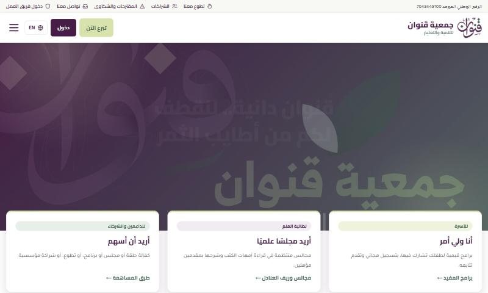
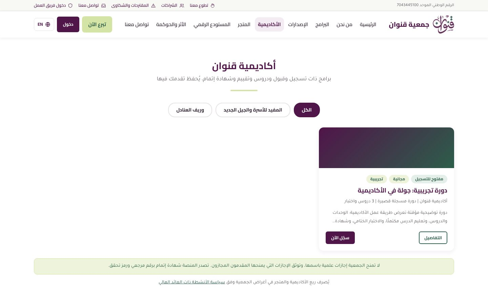
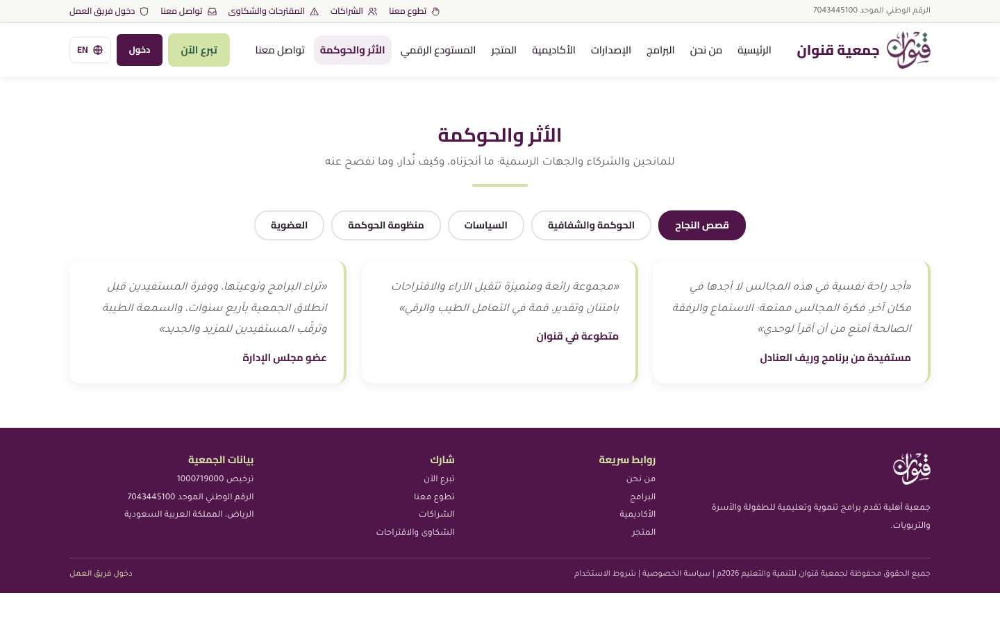
وثائق الحزمة ملك للجهة، ولا تُعرض محتوياتها هنا.
CTMS: نظام إدارة التدريب التعاوني
نشأ من 83 تحديًا تشغيليًا رصدتُها وحللتُها خلال التدريب الميداني في الإدارة العامة لتطوير الموارد البشرية بوزارة التعليم.
- الدور
- صاحبة الفكرة: الرصد والتحليل والتصميم والبناء
- الجهة
- وزارة التعليم، الإدارة العامة لتطوير الموارد البشرية (فترة التدريب)
- المدة
- ثلاثة أشهر ونصف، ثم استكمال شخصي ضمن IEOS
- الحالة
- مبني، وبقي القليل لإتمامه وتجربته
المشكلة
إدارة التدريب التعاوني تتوزع بين جداول ومراسلات وإجراءات يدوية، فتضعف متابعة المتدربين والمشرفين وقياس الأثر.
دوري
رصد التحديات وتحليلها، وتحويلها إلى متطلبات وتصميم وظيفي، ثم بناء النظام وتوثيقه.
ما قمت به
- سجل تحليلي لـ83 تحديًا يربط كل تحدٍّ بجذره وأثره والحل والمؤشر والمالك.
- تحليل الاحتياجات، وحالة عمل للنظام.
- تصميم وظيفي ببوابة موحدة وست بوابات بحسب الدور، وتطبيق جوال للمتدرب.
- معمارية تنفيذية على Power Platform: 30 قائمة SharePoint، و6 تطبيقات Power Apps، و12 تدفق Power Automate، و3 لوحات Power BI، وبوابة Power Pages.
- تقرير المشروع المطبوع ضمن برنامج «مشروع متدرب: من التدريب إلى التمكين».
المخرجات
سجل التحديات، وحالة العمل، والتصميم الوظيفي، والمعمارية، والنموذج الأولي المبني (CTMS Portal).
حالة التنفيذ
بلغت الفكرة إجراءات الموافقة على تطوير نموذج أولي قابل للاختبار يخص إدارة تطوير الموارد البشرية، وتوقفت بانتهاء فترة التدريب. أستكمله حاليًا مشروعًا شخصيًا ضمن منظومة go2top | IEOS.
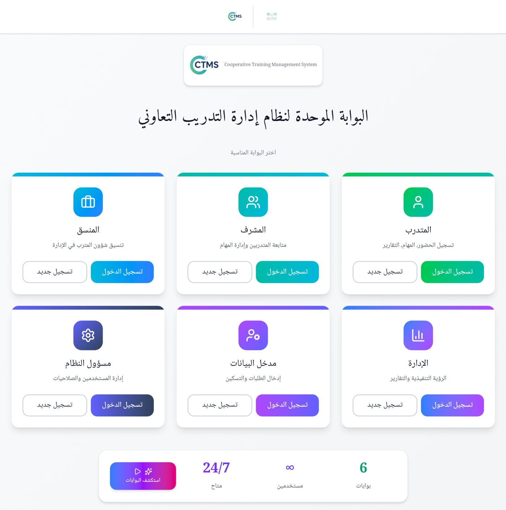
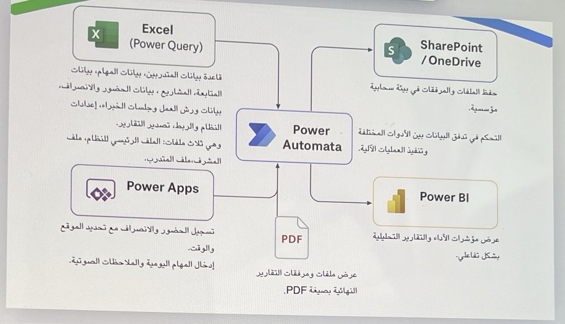
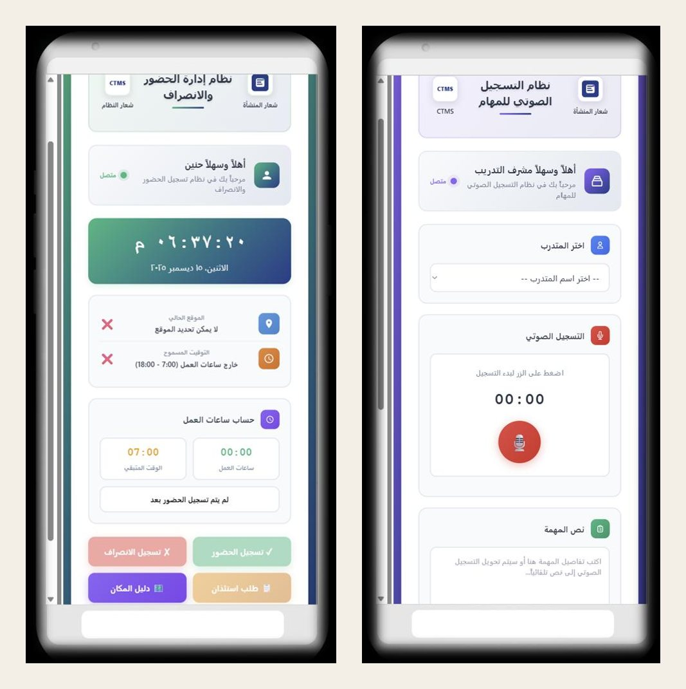
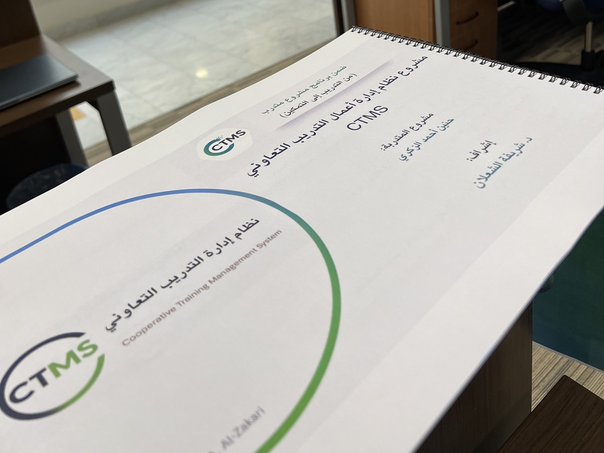
اللوحات المعروضة ببيانات تجريبية.
لوحات المؤشرات وأدوات الموارد البشرية
نماذج تطبيقية لتحليل البيانات وقياس الأداء والاحتياج التدريبي وأثر البرامج، وتحسين إجراءات العمل.
- الدور
- التصميم والبناء
- الأدوات
- Excel، Power BI، HTML وJavaScript
- الحالة
- بين منشور ومستخدم فعليًا ومشروع أكاديمي
المشكلة
بيانات الموارد البشرية تُجمع في جداول متفرقة، وقرارات التوطين والأداء والتدريب تحتاج قراءة سريعة لها.
المنهج
أداة لكل سؤال إداري: ماذا تقول البيانات، وما القرار المقترح، وكيف يُقاس الأثر.
الأعمال
- لوحة تحليلات الموارد البشرية: يُرفع ملف Excel فتُنظَّف البيانات داخل المتصفح دون حفظ، وتظهر مؤشرات التوطين والتنوع والنمو والأداء والانضباط والتكلفة، مع قرار مقترح. منشورة
- نماذج قياس الاحتياج التدريبي وأثر البرامج: أُعدّت خلال التدريب في الإدارة العامة لتطوير الموارد البشرية. استُخدمت فعليًا
- تقارير أسبوعية ولوحات عرض للقيادات، وأدلة إرشادية ونماذج تشغيلية ونماذج مقابلات واستبانات. سُلّمت
- لوحة تحليل بيانات المستفيدين لجمعية البر الأهلية بالرياض: عشرة مؤشرات وسبعة عشر رسمًا. مشروع أكاديمي
- أجندة أخصائي الموارد البشرية 2027: التخطيط والتوظيف وإدارة المواهب ومؤشرات الأداء وتحليلات الموارد البشرية. منتج رقمي
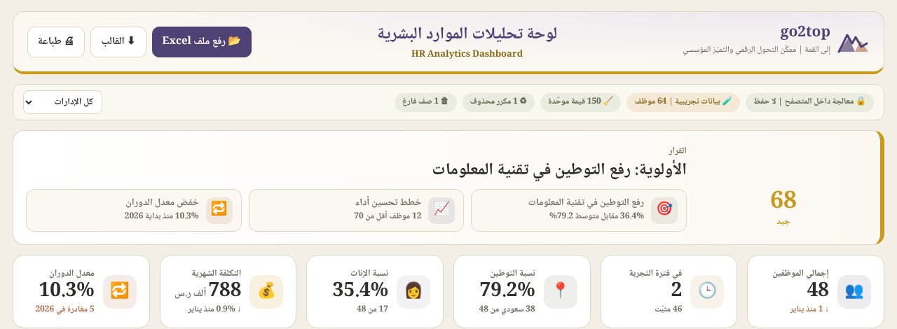
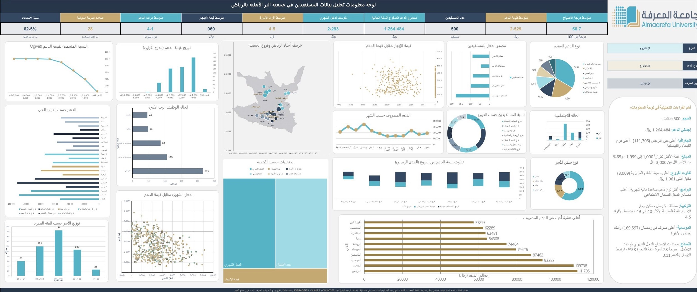
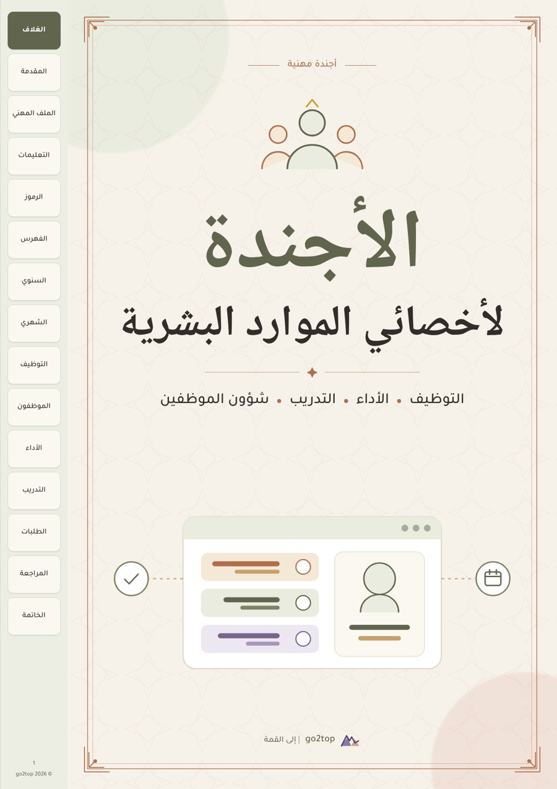
go2top | IEOS: منظومة التشغيل المؤسسي المتكاملة
منظومة التشغيل المؤسسي المتكاملة: هيكلة وأطر 21 نظامًا مؤسسيًا مترابطًا، تمهيدًا لتطوير حلول رقمية متكاملة.
- الدور
- صاحبة الفكرة والمعمارية والأطر
- النطاق
- 21 نظامًا في خمسة مجالات وخمس طبقات
- الحالة
- بنية مفاهيمية قيد التطوير
المشكلة
أنظمة الجهة منفصلة، فتتكرر البيانات وتغيب الصورة المؤسسية الواحدة التي يحتاجها صاحب القرار.
الفكرة
منصة واحدة بهوية دخول موحدة وقاموس بيانات مشترك، يتحول فيها كل نظام إلى جزء من صورة مؤسسية واحدة.
ما قمت به
- هيكلة 21 نظامًا في خمسة مجالات: رأس المال البشري، والعمليات والموارد، والعملاء والتواصل، والاستراتيجية والأداء والتحول، والحوكمة والامتثال.
- معمارية من خمس طبقات: المستخدمون، والمظلة IEOS HUB، والأنظمة، والبيانات، والامتثال (NCA وPDPL وZATCA وDGA).
- إطار لكل نظام: الملخص التنفيذي، ومحاور الألم، والمخاطر، والقيمة، والنطاق، والتكاملات، وأداة Power Platform المقابلة.
- معرض تفاعلي يعرض خريطة الترابط وجناحًا لكل نظام.
حالة التنفيذ
الأنظمة الواحد والعشرون أطر وهيكلة مفاهيمية، وليست أنظمة مكتملة التشغيل. CTMS أول نظام بُني منها.
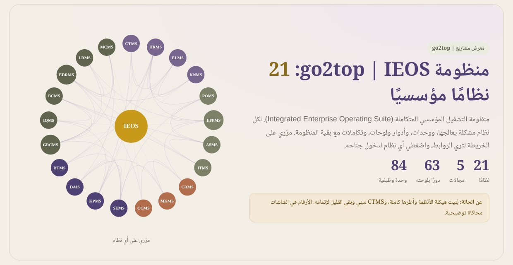
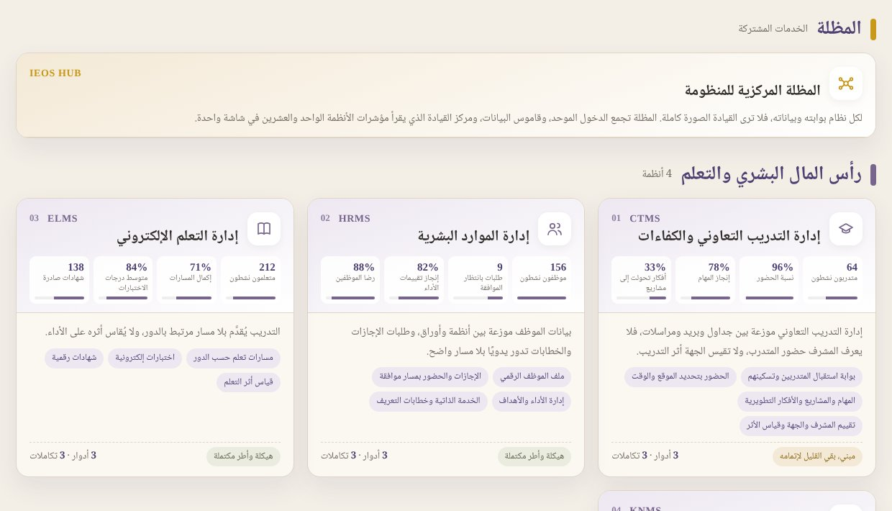
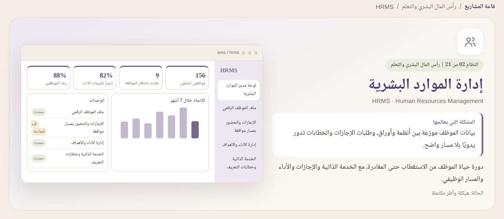
هاكاثون «نواة» والنموذج الأولي
هاكاثون نظمته الإدارة العامة لتطوير الموارد البشرية في وزارة التعليم، فاز فيه فريقنا بالمركز الأول بتطبيق يُشعر أولياء الأمور بوصول الطالب ومغادرته.
- الدور
- إعداد Mini Jam وتخطيطه، ثم عضوة في الفريق الفائز
- الفريق
- ستة أعضاء بتوجيه قائد خبير من الوزارة
- النتيجة
- المركز الأول، وتكريمان مستقلان
الإعداد
أعددتُ الهاكاثون الأولي «Mini Jam» وخططتُ له، ثم سُلّم لفريق استكمل تنفيذه باسم «نواة»، وكُرّمت على الإعداد والتخطيط.
دوري في الفريق
فكرة المشروع شارك فيها الفريق كله. وابتكرتُ إضافة أداة النموذج الأولي ونفذتها فعليًا، وقدّمت العرض للمقيّمين.
النتيجة
المركز الأول ضمن الفريق الفائز، مع تكريم مستقل للفوز، ورسالة إشادة مكتوبة على إعداد الهاكاثون من الإدارة.
ما بعد الهاكاثون
طوّرتُ النموذج إلى تطبيق تفاعلي يتتبع رحلة الطالب، ويؤكد صعود الحافلة ودخول المدرسة، وينبّه عند التأخر أو الخروج عن المسار.
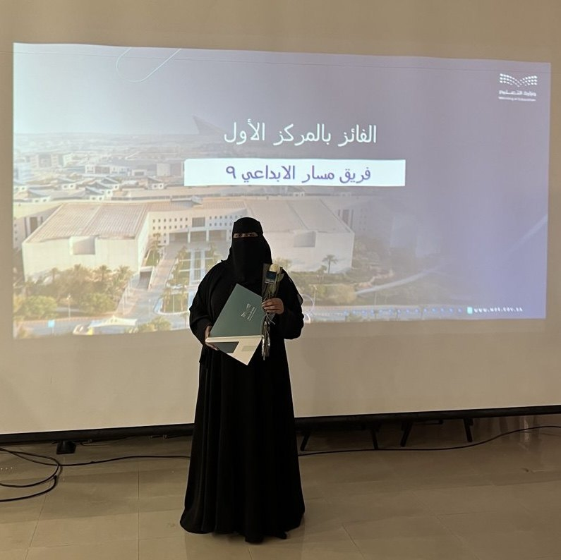
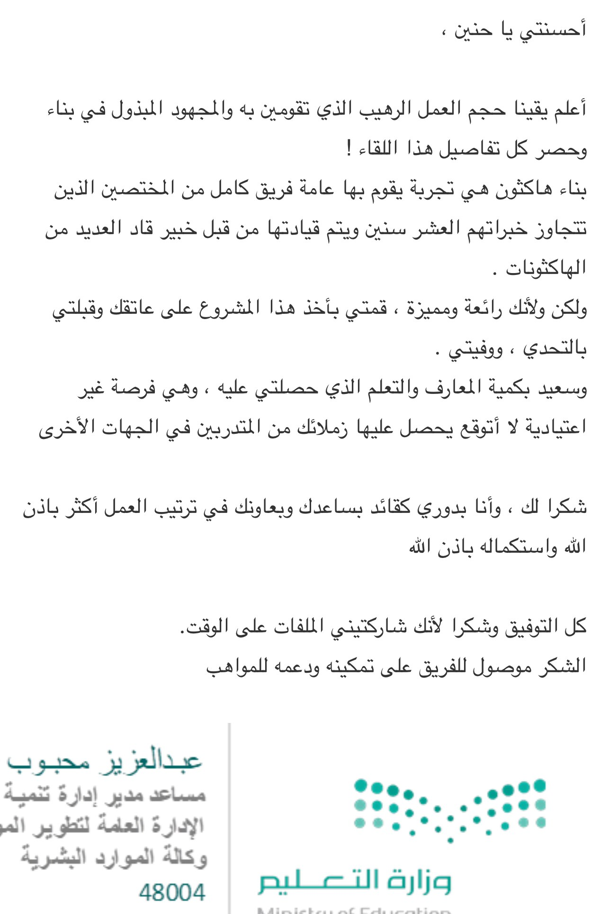
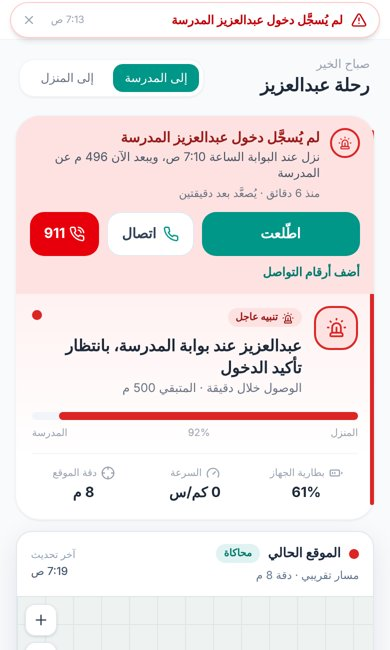
أنظمة بنيتها
أنظمة وتطبيقات وأدوات بين مبني ومنشور ومصمم، تُدار في منظمة go2top-sa على GitHub. لكل عمل حالته الفعلية.
ممارسات هندسية وأمنية أطبقها بحسب متطلبات كل تطبيق
- معمارية v9: بلا onclick مضمّن، ونوافذ تأكيد بديلة، وتفويض الأحداث.
- أمان RLS في Supabase بربط كل سجل بصاحبه.
- سير عمل GitHub Actions للحفاظ على نشاط الخوادم.
- صيغة موحدة للمحاضرات والدورات بملف HTML متعدد الصفحات.
تطبيقات في التحول الرقمي والذكاء الاصطناعي
ستة مشاريع تطبيقية أُنجزت ضمن متطلبات أكاديمية، أبرزها تصور أولي لاستراتيجية تكامل التحول الرقمي لجمعية البر الأهلية، بنموذج تفاعلي منشور.
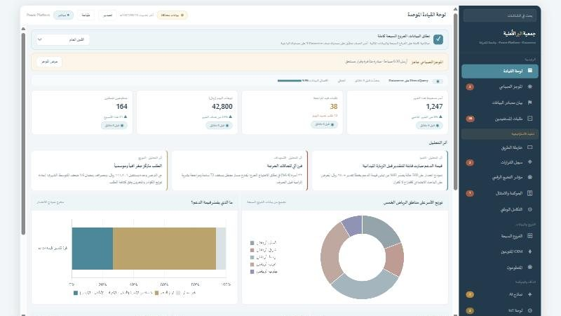
استراتيجية تكامل التحول الرقمي لجمعية البر الأهلية بالرياض
تصور أولي لتطبيق مفردات مقرر التحول الرقمي على جهة حقيقية، أعدّه فريق «صناع التغيير» مشروعًا أكاديميًا اعتمادًا على البيانات المنشورة للجمعية: سبعة أنظمة منفصلة في سبعة فروع تتوحد في طبقة تكامل على Power Platform ومستودع Dataverse واحد. ثماني مراحل و15 مبادرة، وموازنة 239,800 ريال على 30 شهرًا، وعائد اجتماعي مستهدف 3.5:1، ونضج رقمي مستهدف 3.8 من 5 مقابل 1.8 اليوم. عرض من 43 شريحة، وتحليل Excel بـ16 ورقة و26 رسمًا على 500 سجل. أطر TOGAF وADKAR وSROI وPDPL.
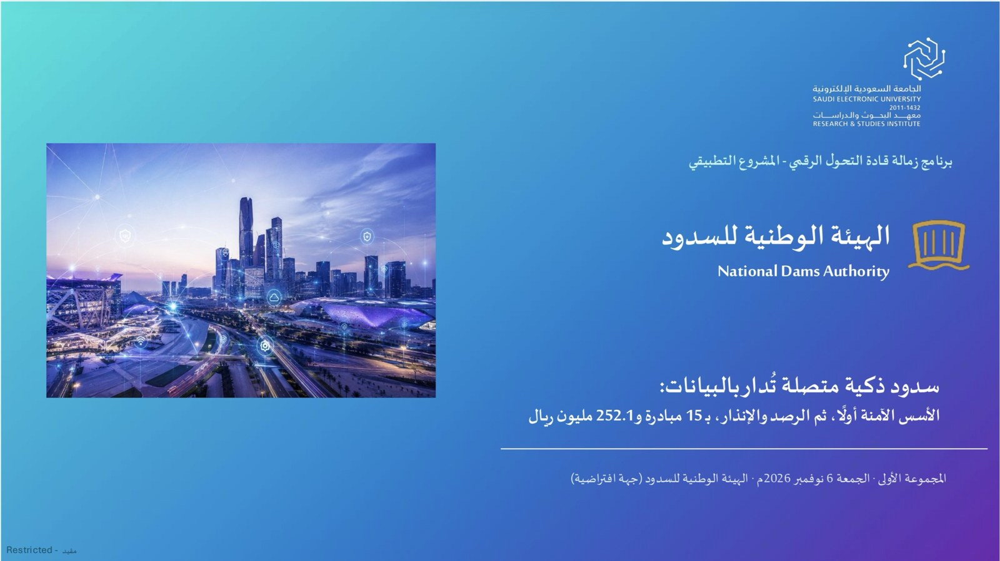
مشروع تخرج زمالة قادة التحول الرقمي
عمل جماعي لجهة وطنية ضمن فريق من أربعة أعضاء، بدور مسؤولة الجاهزية وقيادة التغيير: الخطة الاستراتيجية، وتقرير الجاهزية بإطار من ستة محاور و15 مبادرة، والعرض النهائي، مع ADKAR وسجل المخاطر وتحليل أثر الأعمال.
مشروع التخرج DT-2605
تصور متكامل لحالة «شركة المستقبل الرقمية» يربط التحول الرقمي المتقدم والأمن السيبراني والذكاء الاصطناعي.
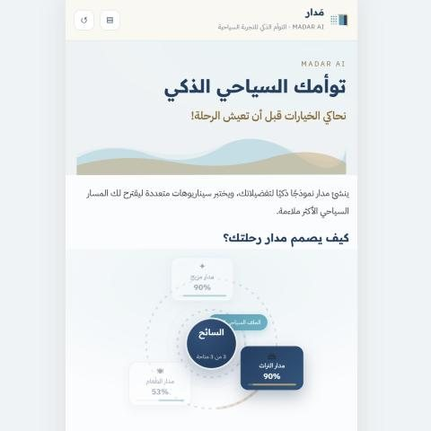
MADAR AI
نموذج أولي تفاعلي لتوأم رقمي ذكي للسياحة بثماني شاشات وظيفية.
مبادرة تحول رقمي لوزارة السياحة
تصميم مبادرة، وتقرير دراسة حالة: المشكلة، والحل الرقمي، ومحرك الذكاء الاصطناعي، والأثر.
لوحة رؤية 2030
لوحة مؤشرات Excel ضمن فريق «صناع التغيير».
أعمال معرفية وتوثيقية
- المرجع الموحد لزمالة قادة التحول الرقمي: دمج 68 ملفًا في مرجع واحد يتجاوز 1,000 صفحة، بنص قابل للبحث وعلامات تنقل.
- حالة عمل CTMS، وسجل آلام تحليلي يربط كل ألم بجذره وأثره والحل والمؤشر والمالك.
- مرجع أكاديمي شامل عن أنظمة ERP: آلياتها وحوكمتها وتطبيقاتها.
- نظام الباحث الأكاديمي المتكامل (الإصدار 2.2) لمرافقة دورة البحث حتى النشر والدفاع، ضمن تموضع بحثي في التحول الرقمي للموارد البشرية والتميز المؤسسي.
- خريطة انتقال وظيفي لاثني عشر شهرًا بمصفوفة 18 كفاءة مرجعها SFIA، وأداة تقييم ذاتي لمتطلبات CIPD.
نماذج من الأعمال
لقطات من منصات منشورة، وتصاميم، وشهادات موثقة. تُكبَّر أي صورة بالضغط عليها.
المعروض هنا هو الأحدث، وتسبقه أعمال وتكريمات ودورات كثيرة خلال سنوات العمل القيادي والأكاديمي.
مسار أكاديمي يجمع الإدارة والتقنية
المعدلات من 5، إلا ما ذُكر نسبةً مئوية.
| المؤهل | الجهة | السنة | الحالة والمعدل |
|---|---|---|---|
| الدبلوم العالي في الموارد البشرية | جامعة الملك سعود | 2026 | مكتمل 4.85 |
| زمالة قادة التحول الرقمي | جامعة الأمير مساعد بن عبدالرحمن | 1448هـ | مكتملة تقدير ممتاز (97%) |
| الدبلوم المتوسط في علوم الحاسب وتحليل البيانات | جامعة الملك فيصل | 1448هـ | قيد الدراسة |
| الدبلوم المشارك في التحول الرقمي | جامعة المعرفة | 1447هـ | مكتمل 99.33% بتقدير A+ في جميع المقررات |
| البكالوريوس في أصول الدين | جامعة الإمام محمد بن سعود الإسلامية | 1427هـ | مكتمل |
مؤشرات داعمة
- اختبار القدرات العامة للجامعيين: 78 درجة (أغسطس 2026).
- توصيتان علميتان من مركز الجدارات للتطوير والتدريب بجامعة الملك سعود.
- مشروع تخرج الزمالة: خطة استراتيجية للتحول الرقمي وتقرير جاهزية لجهة وطنية، ضمن فريق من أربعة أعضاء، بدور مسؤولة الجاهزية وقيادة التغيير.
تأهيل في التقنية والإدارة والبيانات
شهادتان موثقتان من Cisco، وتخصص Microsoft عبر Coursera من أربع دورات، وعشر دورات حضورية وورشتان من مركز المسار الاحترافي للتدريب، وبرنامجا إعداد مكتملان بانتظار الاختبار.
المعروض هنا هو الأحدث، وتسبقه أعمال وتكريمات ودورات كثيرة خلال سنوات العمل القيادي والأكاديمي.
الدورات التي تحمل اسم شهادة مهنية (PMP، GRCP، Lean Six Sigma) شهادات إتمام دورة، وتُكتب بعدد ساعاتها. دورة PMP تستوفي شرط 35 ساعة تعليمية لاختبار PMP.
المركز الأول في هاكاثون «نواة»
هاكاثون نظمته الإدارة العامة لتطوير الموارد البشرية في وزارة التعليم (1447هـ)، مع تكريمين منفصلين.
المعروض هنا هو الأحدث، وتسبقه أعمال وتكريمات ودورات كثيرة خلال سنوات العمل القيادي والأكاديمي.
تطبيق إشعارات أولياء الأمور
تطبيق يرسل إشعارات تلقائية لأولياء الأمور عند وصول الطالب إلى المدرسة ومغادرته. فريق من 6 أعضاء بتوجيه قائد خبير من الوزارة؛ أنشأتُ النموذج الأولي كاملًا وقدّمت العرض للمقيّمين. فاز الفريق «مسار الإبداعي 9» بالمركز الأول.
الفوز بالمركز الأول
كُرّمتُ على الفوز بالمركز الأول في الهاكاثون نفسه، تكريمًا مستقلًا عن تكريم الإعداد والتخطيط.
إعداد الهاكاثون وتخطيطه
أعددتُ الهاكاثون الأولي «Mini Jam» وخططتُ له، ثم سُلّم لفريق استكمل تنفيذه باسم «نواة». وكُرّمتُ على الإعداد والتخطيط. صُمّم برنامجًا تدريبيًا تطبيقيًا لـ64 متدربًا من مختلف التخصصات في 8 فرق، على ثلاثة أيام بخبراء داعمين: يوم إثراء، ويوم إنتاج للنموذج الأولي، ثم التحكيم وتكريم أفضل 3 فرق.
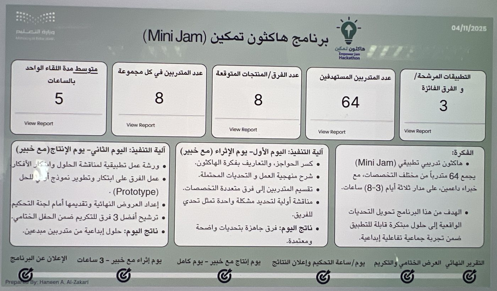
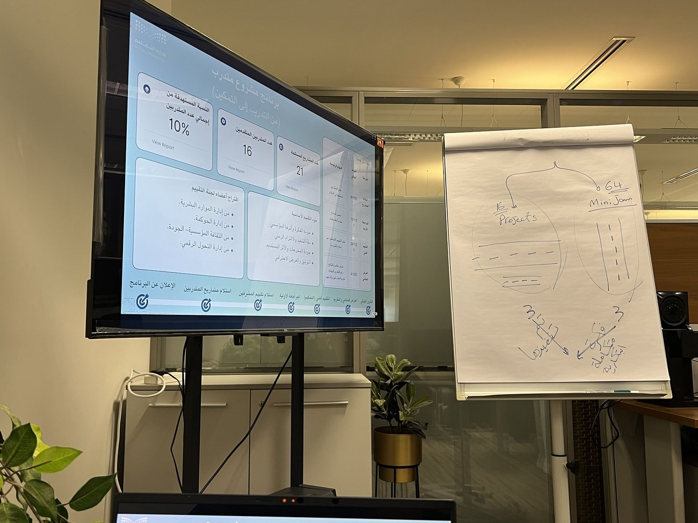
الإشادات المكتوبة
«قمتي بأخذ هذا المشروع على عاتقك وقبلتي بالتحدي، ووفيتي»
من رسالة الأستاذ عبدالعزيز محبوب العوفي، مساعد مدير إدارة تنمية الموارد البشرية في الإدارة العامة لتطوير الموارد البشرية بوزارة التعليم. ذكر فيها أن بناء الهاكاثون يتولاه عادةً فريق كامل من المختصين تتجاوز خبراتهم عشر سنوات، بقيادة خبير قاد هاكاثونات عديدة.
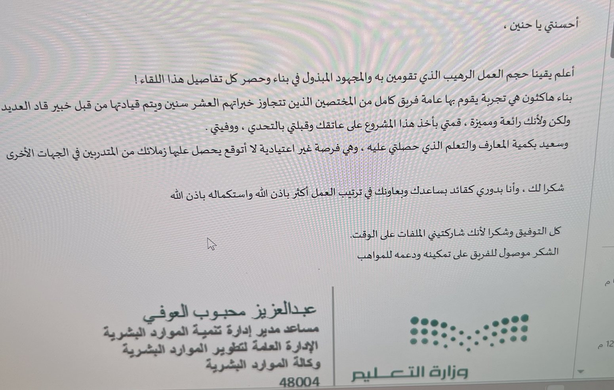
«عادةً أقرأ التقرير النهائي مرة واحدة فقط، لكن جودة تقريرك دفعتني لإعادته مرارًا»
من رسالة د. ندى بنت فهد بن دهمش، أستاذ مشارك في اللغويات التطبيقية بجامعة الملك سعود والمشرفة الأكاديمية على التدريب الميداني، تعقيبًا على التقرير النهائي للتدريب في وزارة التعليم (15 ديسمبر 2025). طلبت الاحتفاظ به نموذجًا يُسترشد به مستقبلًا.
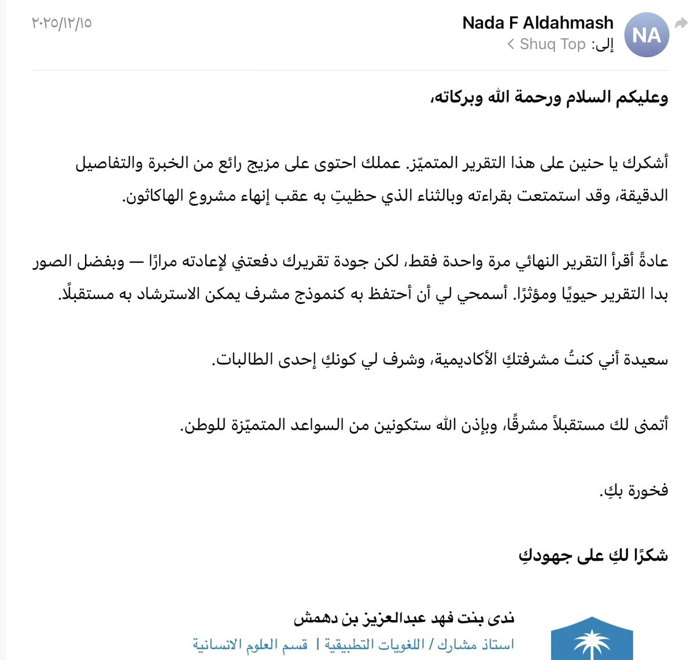
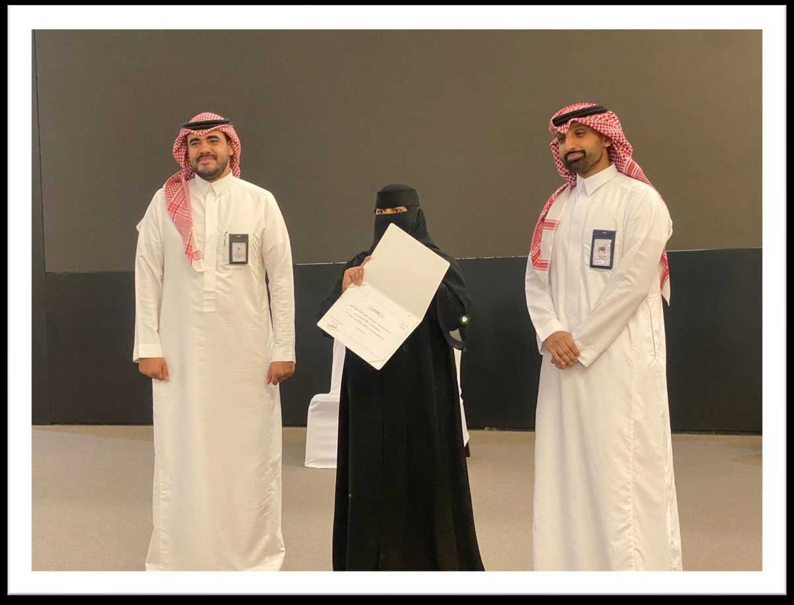
«مستوى الشغف الذي كان يرافق أعمالك لا تفيه كلمة شكر»
من رسالة د. شريفة شعلان القرني، المشرفة الميدانية على التدريب في الإدارة العامة لتطوير الموارد البشرية بوزارة التعليم. أشارت فيها إلى الإبداع والدعم والأفكار الرائدة، وإلى مواصلة العمل معًا فريقًا واحدًا.
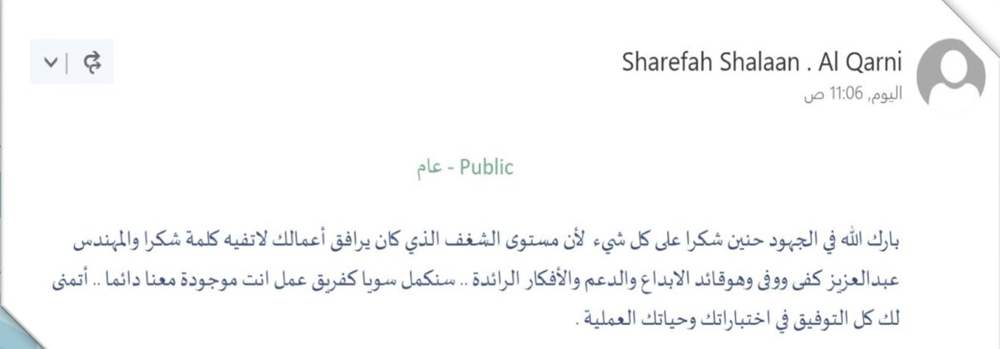
الشكر والتفوق
اللقاء التعريفي لمرشحي برنامج تمهير
شهادة شكر وتقدير من إدارة تنمية الموارد البشرية بوزارة التعليم على المشاركة المتميزة في اللقاء التعريفي لمرشحي برنامج تمهير في ديوان الوزارة، المنفذ في 1 ديسمبر 2025.
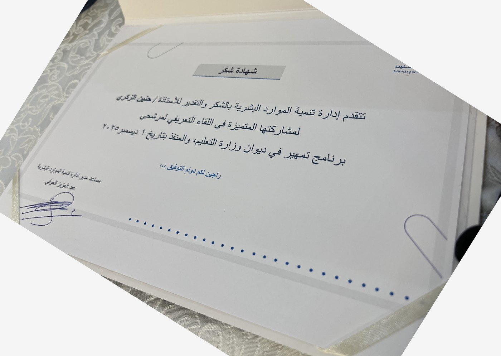
البلاغة والأدب وحسن الصياغة
المركز الأول في مسابقة مدرسية في البلاغة والأدب وحسن الصياغة باللغة العربية.
التفوق في أربعة برامج
- زمالة قادة التحول الرقمي: تقدير ممتاز (97%)
- الدبلوم المشارك في التحول الرقمي: 99.33% بتقدير A+ في جميع المقررات
- الدبلوم العالي في الموارد البشرية: 4.85 من 5
- السنة المنهجية للماجستير: 4.56 من 5
ممكّن التحول الرقمي والتميّز المؤسسي
مؤسسة سعودية متخصصة في تمكين التحول الرقمي والتميّز المؤسسي، وتطوير الأعمال ورأس المال البشري، وتصميم الحلول الرقمية والأنظمة التشغيلية لتعزيز الكفاءة والأداء المؤسسي. ترتكز أعمالها على التخطيط والتحليل والتصميم والتطوير، مع الاهتمام بجودة المخرجات، وكفاءة الأداء، واستدامة الأثر.
- المقر
- الرياض، المملكة العربية السعودية
- المؤسِّسة
- حنين الزكري
- المرحلة الحالية
- البناء والتأسيس
- السلسلة الذهبية: دليل و31 منتجًا بثلاث صيغ، مكتملة.
- خمس أجندات احترافية رقمية.
- لوحة تحليلات الموارد البشرية، وتطبيقات إنتاجية منشورة.
- المقر الرقمي التوأم، قيد التطوير ببيانات تجريبية.
- مجالات الأعمال العشرة، ونسخ المنظومة وحزمها.
- أنظمة IEOS الواحد والعشرون، أطر مفاهيمية قيد التطوير.
- استكمال متطلبات تأسيس المؤسسة.
تتنوع مجالات أعمال go2top ضمن منظومة مؤسسية تشمل تطوير الأعمال، والتحول الرقمي، والتميز المؤسسي، وتنمية رأس المال البشري، وتصميم الحلول والمنتجات الرقمية.
أولًا: مجالات الأعمال الرئيسية
go2top الأعمال الفردية
تطوير الأعمال والمشروعات الفردية، وتصميم نماذج الأعمال، وتحسين الإجراءات، وتقديم الحلول المهنية والتشغيلية.
go2top قيادة التحول الرقمي
تخطيط مبادرات التحول الرقمي، وتحليل الاحتياجات، وإعادة هندسة العمليات، وإدارة التغيير المؤسسي.
go2top التميز المؤسسي والحوكمة
التخطيط الاستراتيجي، والتطوير التنظيمي، وبناء الأطر والسياسات والإجراءات، وإدارة الأداء ومؤشراته.
go2top رأس المال البشري
تطوير ممارسات الموارد البشرية، وتخطيط القوى العاملة، وإدارة الكفاءات، وتحليلات الموارد البشرية.
go2top أنظمة التشغيل
تصميم نظم العمل الإدارية والتشغيلية، وتوثيق الإجراءات، وتطوير أدوات المتابعة والرقابة وقياس الأداء.
go2top المنتجات
تصميم وتطوير المنتجات الرقمية والمهنية، والقوالب الإدارية، ولوحات المؤشرات، والأدوات المساندة للأعمال.
go2top الاستثمار والاحتضان
تطوير المبادرات والمشروعات الريادية، ودراسة فرص الاستثمار، وتصميم نماذج الاحتضان والنمو.
ثانيًا: المجالات المساندة
go2top الحلول الرقمية
تصميم وتطوير المواقع والمنصات والأنظمة الرقمية، وتكامل التطبيقات، وأتمتة العمليات.
go2top الابتكار والتطوير
البحث والتطوير، وتحليل الفرص، وتصميم الحلول المبتكرة، وتطوير النماذج الأولية.
go2top الأكاديمية
تطوير المحتوى التعليمي والمهني، وتصميم البرامج التدريبية، وإعداد الأدلة والحقائب المعرفية.
ثالثًا: الحالة المؤسسية
تعمل go2top حاليًا على استكمال متطلبات التأسيس، وتطوير نموذج أعمالها، وبناء محفظة الخدمات والمنتجات، وإعداد النظم والأدوات اللازمة للتشغيل. وتُعرض المجالات السابقة بوصفها الهيكل المستهدف لأعمال المؤسسة، مع التمييز بين الأنشطة الجاري تطويرها والتوجهات المستقبلية.
IEOS (Integrated Enterprise Operating Suite): منظومة التشغيل المؤسسي المتكاملة. تجمع أنظمة الجهة في منصة واحدة بهوية دخول موحدة وقاموس بيانات مشترك، فيتحول كل نظام إلى جزء من صورة مؤسسية واحدة يقرأ منها صاحب القرار حالة الجهة كاملة.
معرض منظومة go2top | IEOS: 21 نظامًا مؤسسيًا
خريطة ترابط تفاعلية، وجناح لكل نظام فيه المشكلة التي يعالجها، ووحداته، وشاشة توضيحية لكل دور، وتكاملاته مع بقية المنظومة.
تكامل بين الأنظمة
المبادرات الاستراتيجية في SEMS تتحول إلى مشاريع في POMS، ورواتب HRMS تُعالَج في EFPMS، ووثائق السياسات في EDRMS يستهلكها GRCMS للتدقيق والامتثال.
وثيقة لكل نظام
لكل نظام هيكلة وإطار تنفيذي: الملخص التنفيذي، ومحاور الألم، والمخاطر، والقيمة، والنطاق، والتكاملات، وأداة Power Platform المقابلة.
CTMS النواة التشغيلية
نظام إدارة التدريب التعاوني والكفاءات، نشأ من 83 تحديًا تشغيليًا رُصدت ميدانيًا. تتوقع دراسة جدواه، وفق افتراضاتها، عائدًا بنسبة 220% خلال 24 شهرًا، واستردادًا خلال 8 إلى 14 شهرًا، وتنفيذًا في 16 أسبوعًا.
حزمة القطاع غير الربحي
حزمة مبنية على DTMS لمتطلبات الجمعيات: الحوكمة، والإفصاح للمانحين، والتقارير التنظيمية، وقياس الأثر الاجتماعي.
دراسة جدوى وحالة عمل للمنظومة في عرض من 163 شريحة، وعرض استثماري ثنائي اللغة.
21 نظامًا تجمعها المظلة IEOS HUB، موزعة على خمسة مجالات:
رأس المال البشري والتعلم
إدارة التدريب التعاوني والكفاءات، والموارد البشرية، والتعلم الإلكتروني، والمعرفة المؤسسية.
العمليات والموارد
المشاريع والعمليات، والمالية والمشتريات، والأصول والمرافق والمخزون، وخدمات تقنية المعلومات.
العملاء والتواصل
علاقات العملاء والمستفيدين، والتسويق والتواصل المؤسسي، والاتصالات والمراسلات.
الاستراتيجية والأداء والتحول
الاستراتيجية المؤسسية، ومؤشرات الأداء، والبيانات والذكاء الاصطناعي ودعم القرار، والتحول الرقمي.
الحوكمة والامتثال والاستمرارية
الحوكمة والمخاطر والامتثال، والجودة، واستمرارية الأعمال، والوثائق والسجلات، والشؤون القانونية والعقود، والاجتماعات واللجان.
نسخ المنظومة وحزمها قيد الحسم ضمن المرجع التأسيسي، وتُبنى أسعارها بعد حسم محتواها.
ثلاث نسخ
نسخ متدرجة بأسماء مثل «أساس، مهني، مؤسسي»، تبدأ بما تحتاجه الجهة أولًا وتتوسع معها.
حزمة القطاع غير الربحي
مبنية على DTMS: الحوكمة، والإفصاح للمانحين، والتقارير التنظيمية، وقياس الأثر الاجتماعي.
المنظومة الكاملة
الأنظمة كلها تحت المظلة IEOS HUB ومركز قيادة واحد.
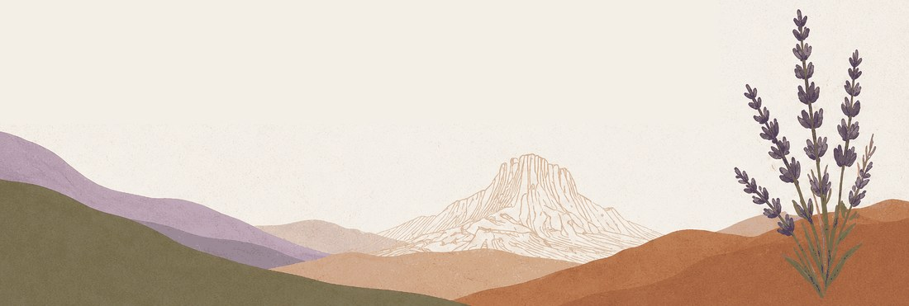
السلسلة الذهبية
دليل مجاني و31 منتجًا بثلاث صيغ: Excel وGoogle Sheets والتطبيق التفاعلي، وهي مكتملة.
منتجات مختارة وفق المجال
لقطات من الصفحة الرئيسية لكل ملف في Excel، والصورة تُكبَّر عند الضغط عليها.
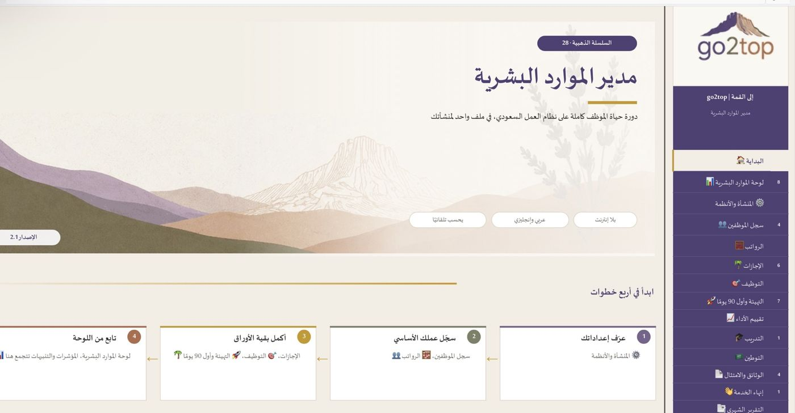
مدير الموارد البشرية
إدارة وتطوير الموارد البشريةدورة حياة الموظف على نظام العمل السعودي: السجل والرواتب والإجازات، والتوظيف والتهيئة في أول 90 يومًا، وتقييم الأداء والتدريب والتوطين.
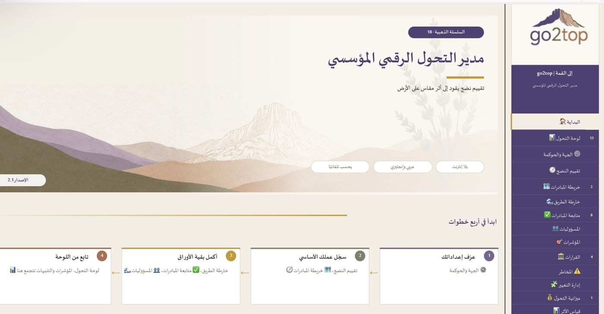
مدير التحول الرقمي المؤسسي
التخطيط الاستراتيجي والتحول الرقميتقييم النضج، وخريطة المبادرات وخارطة الطريق، والمسؤوليات والقرارات والمخاطر، وإدارة التغيير، وقياس الأثر، ومحفظة التطبيقات.
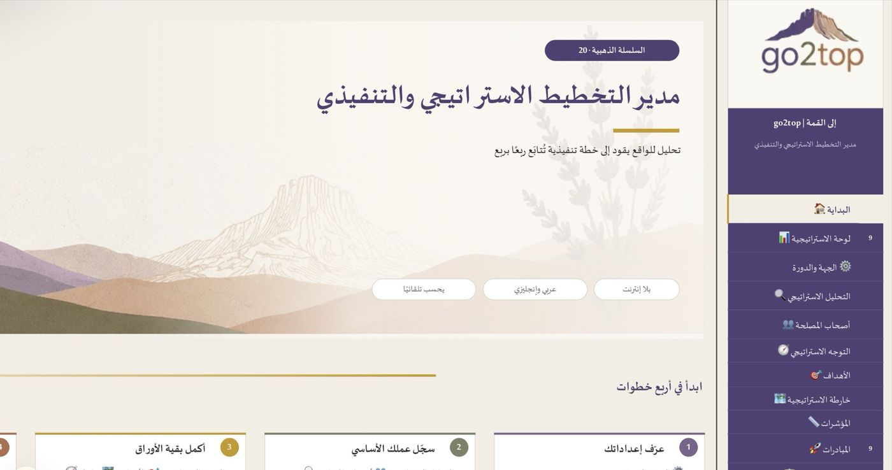
مدير التخطيط الاستراتيجي والتنفيذي
التخطيط الاستراتيجي والقيادةالتحليل الاستراتيجي وأصحاب المصلحة، والتوجه والأهداف، وخارطة الاستراتيجية والمؤشرات، والمبادرات والخطة التنفيذية بمتابعة ربعية.
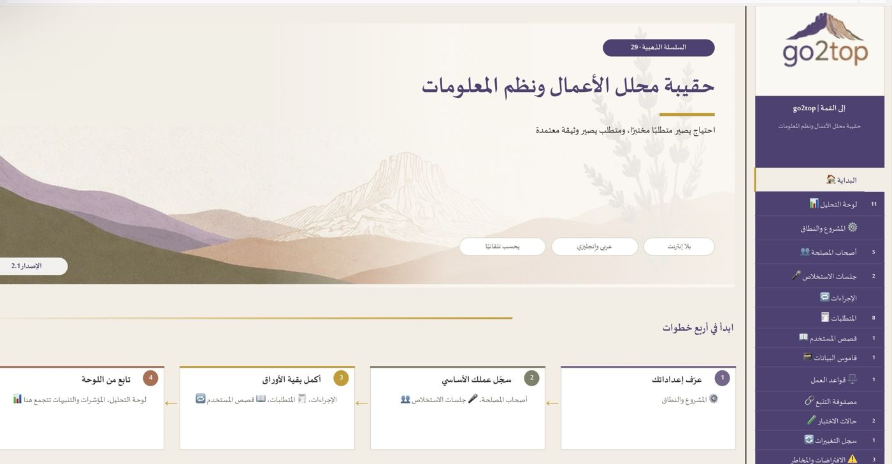
حقيبة محلل الأعمال ونظم المعلومات
تطوير العمليات وتصميم نظم الأعمالجلسات الاستخلاص والإجراءات، والمتطلبات وقصص المستخدم، وقاموس البيانات وقواعد العمل، ومصفوفة التتبع وحالات الاختبار.
ومن السلسلة أيضًا
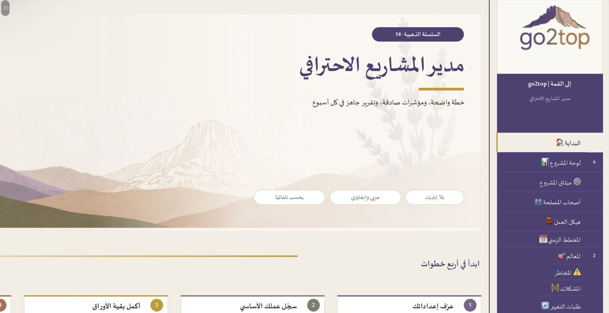
14 مدير المشاريع الاحترافي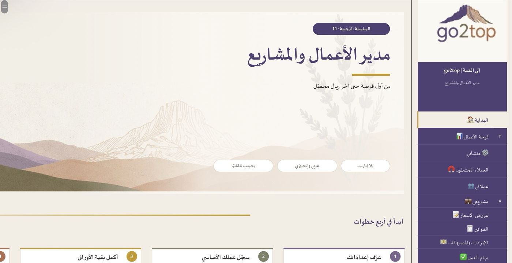
11 مدير الأعمال والمشاريع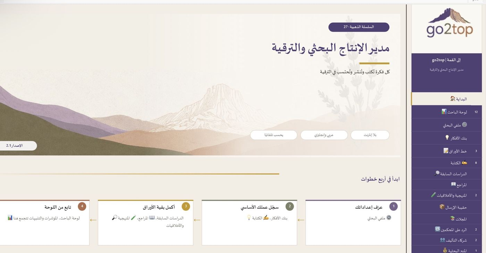
27 مدير الإنتاج البحثي والترقية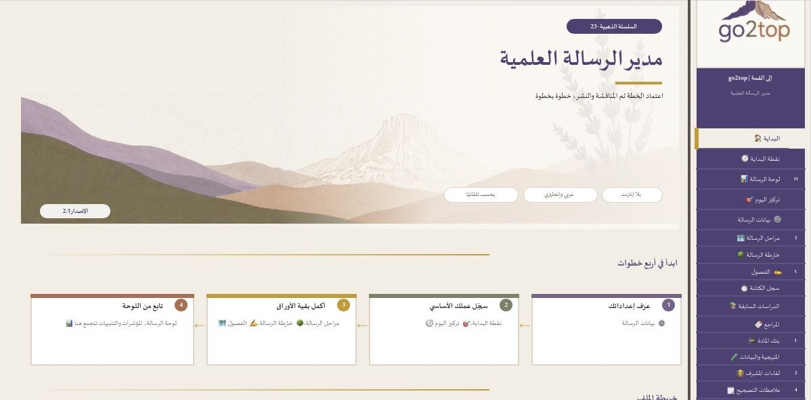
23 مدير الرسالة العلميةإعلان عمودي مدته 18 ثانية بمقاس 1080×1920، لتيك توك وريلز وشورتس. واحد من 32 إعلانًا أُعدّت لمنتجات السلسلة كلها، بهوية go2top وموسيقى أصلية.
بنية السلسلة
- دستور حاكم (v3) للصيغ الثلاث واللغتين وأسماء المنتجات وأقسام المتجر.
- قائمة جانبية للتنقل في كل ورقة، ولوحة قيادة ببطاقات مؤشرات ورسوم بألوان الهوية؛ تحديث v2.1 شمل 62 ملفًا عربيًا وإنجليزيًا.
- نظام تفعيل على Cloudflare Pages: أكواد موقّعة، وحد 3 أجهزة، واجتاز 29 اختبارًا.
الأجندات الاحترافية
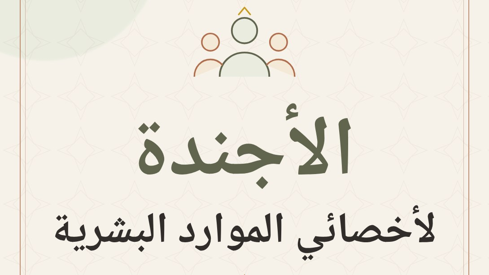
أجندة أخصائي الموارد البشرية 2027
التخطيط الاستراتيجي، والتوظيف، وإدارة المواهب، ومؤشرات الأداء، والمبادرات، وتحليلات الموارد البشرية.
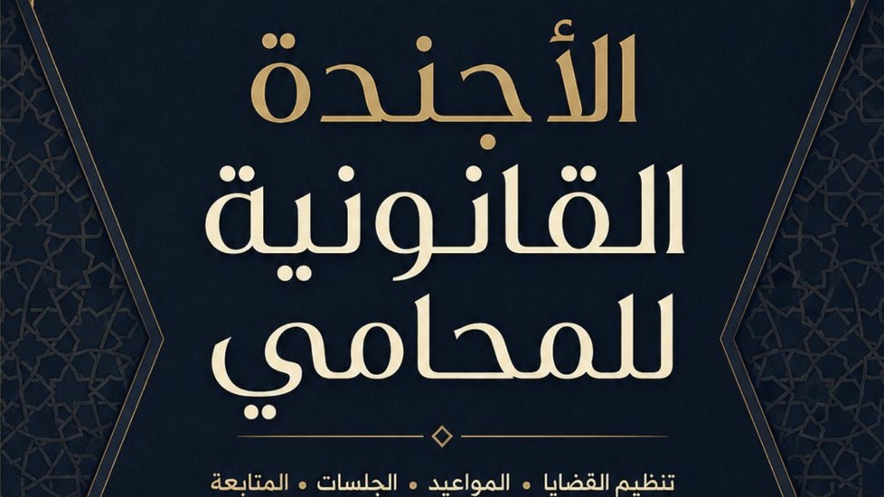
الأجندة القانونية للمحامي 2027
تتبع القضايا بتسعة تخصصات، والجلسات، والأتعاب، والوكالات، وسجل المخاطر القانونية.
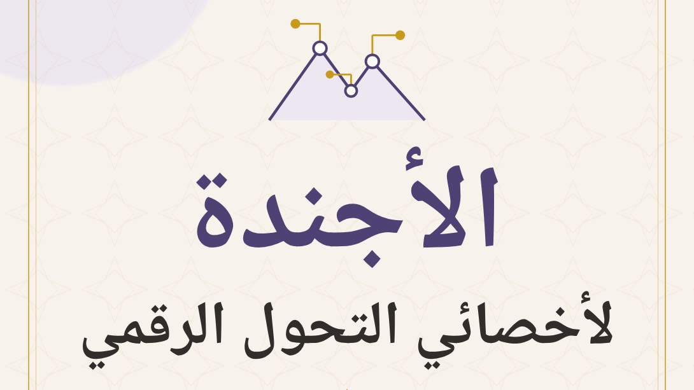
أجندة أخصائي التحول الرقمي
OKRs، والتقييم الذاتي للكفاءات، ومحفظة المشاريع، وسجل المخاطر، والمراجعة الربعية.
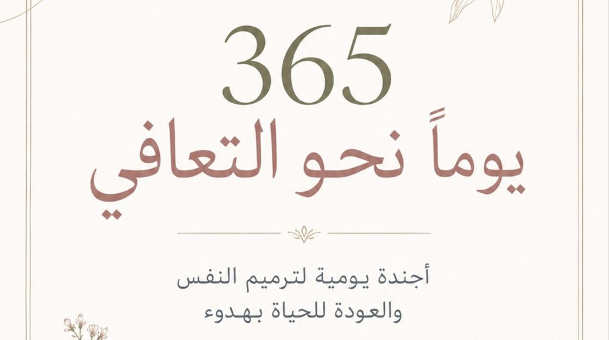
365 يومًا نحو التعافي
أجندة يومية لترميم النفس والعودة للحياة بهدوء: متابعة المزاج، وصفحة لكل يوم في اثني عشر شهرًا، ومساحة للكتابة.
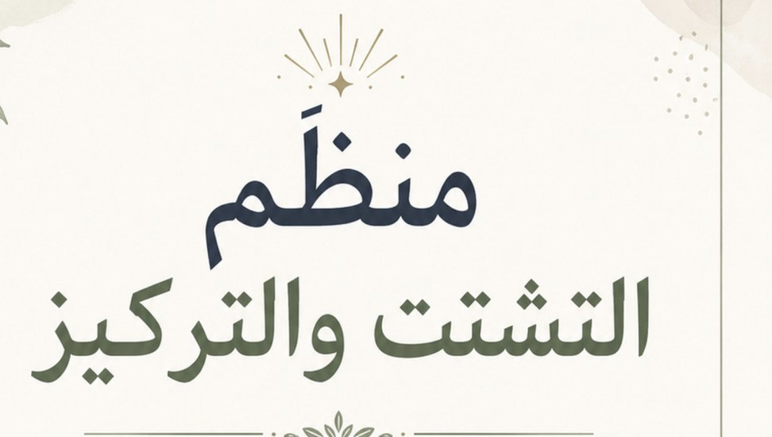
منظم التشتت والتركيز
نظام عملي لإدارة التشتت والاندفاع وفرط التفكير، بمسار وأدوات ومتابعة شهرية على مدار السنة. أداة تنظيم ومساندة ذاتية.
للتواصل والتعاون
- البريد
- hanin.al.zakari@gmail.com
- linkedin.com/in/haneen-al-zakari
- GitHub
- github.com/go2top-sa
- المدينة
- الرياض، المملكة العربية السعودية
السير الذاتية المتخصصة
القيادة والإدارة
القيادة الإدارية، والتخطيط، والموارد البشرية، وإدارة التغيير، للمناصب القيادية.
الموارد البشرية
إدارة الموارد البشرية وتطويرها: الاستقطاب، والتهيئة، والأداء، والتدريب، وأدوات التحليل.
التحول الرقمي
التحول الرقمي وتصميم نظم الأعمال، والأنظمة والمنتجات الموجودة في ملف الأعمال.